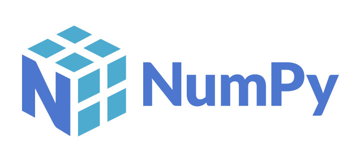
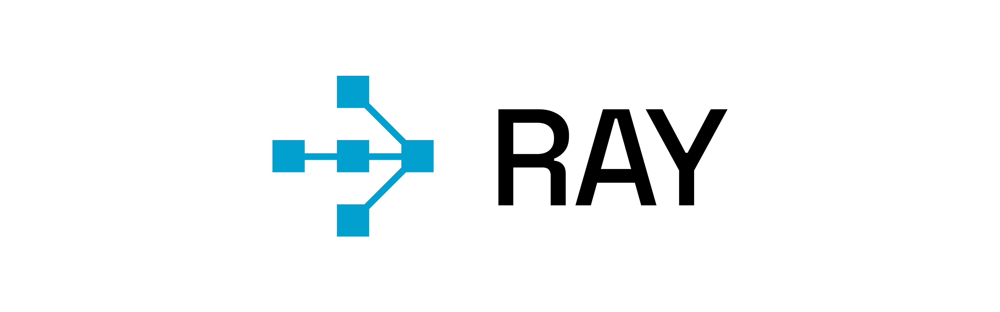
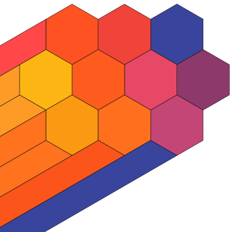
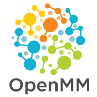
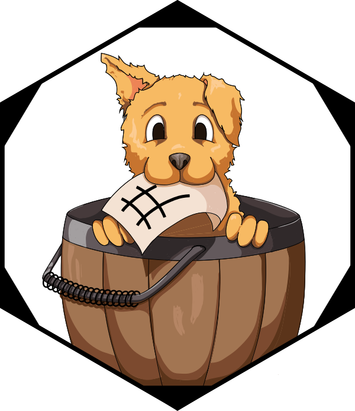
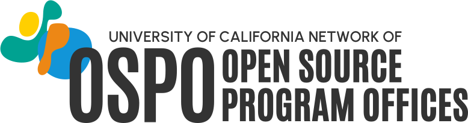

Plot.plot({
projection: {
type: "equal-earth",
domain: {
type: "MultiPoint",
coordinates: members.map(d => [+d.lon, +d.lat])
},
inset: 40
},
width: 660,
height: 340,
style: {background: "transparent"},
marks: [
Plot.graticule({stroke: "#e8eef8", strokeWidth: 0.5}),
Plot.geo(topojson.feature(world_topo, world_topo.objects.land), {
fill: "#e8eef8", stroke: "#ccc", strokeWidth: 0.5
}),
Plot.dot(members, {
x: d => +d.lon,
y: d => +d.lat,
r: 7,
fill: d => d.uc_network === "yes" ? "#ff9100" : "#003cb3",
stroke: "white",
strokeWidth: 1.2,
tip: true,
title: d => d.name
})
]
})Open Source as Institutional Infrastructure
Lessons from the UC OSPO Network
Tim Dennis
Data Science Center, UCLA Library
UCLA OSPO Lead, UC OSPO Network
The invisible layer
Research data workflows run on open source:
- Data collection, cleaning, analysis, visualization
- Reproducibility tooling: containers, workflows, version control
- Repositories and scholarly infrastructure
92% of researchers use software; 67% say their research would be impossible without it.
The people keeping it running are increasingly called Research Software Engineers (RSEs), a growing professional community with no standard institutional home.
If every organization had to replace open source with proprietary equivalents, the cost would exceed $8.8 trillion.
Hettrick et al. (SSI, 2014/2022) · Hoffmann, Nagle & Zhou (2024) doi:10.2139/ssrn.4693148

NumPy
RayWe’ve been here before
People in this room helped build the open data movement:
- FAIR principles: from aspiration to institutional expectation
- Data management plans embedded in grant workflows
- Curation, provenance, and stewardship as professional services
- Open science infrastructure: repositories, PIDs, metadata standards
- FAIR4RS: FAIR principles now extended to research software
Software is the next frontier, and UC has been showing the way for 50 years: BSD Unix, Ceph, Apache Spark, RISC-V, Ray. The pipeline from university research to global infrastructure is not rare or accidental.
“The research done in academia was the seed. Foundations provided the soil. But the community was the sun.”
Barker et al. (2022) doi:10.1038/s41597-022-01710-x · Ruff, N. (2026) “The Role of Foundations in Advancing Open Collaboration and Innovation,” UC Open Summit. youtu.be/eBriL3CDNeo
The UC research-to-infrastructure pipeline
UC Berkeley
 Jupyter
Jupyter
 Apache Spark
Apache Spark
 RISC-V
RISC-V
Ray
BSD Unix
UC Santa Cruz
Ceph
UCSC Genome Browser
UC San Diego
Cytoscape EEGLAB

UCSD Pascal
UCLA
 Processing
Processing
Named Data Networking
tz database
UC San Francisco
ChimeraX

OpenMM
UC Davis

sourmashERPLAB
Summer 2000. UC Santa Cruz.
PhD student Jim Kent assembled the human genome on 50 borrowed PCs, icing his wrists to keep coding.
He finished three days before a corporate competitor’s supercomputer.
The genome stayed in the public domain.
Kent, J.W. (2002). BLAT - The BLAST-Like Alignment Tool. Genome Research 12, 656–664. · genome.ucsc.edu
What is an academic OSPO?
An Open Source Program Office supports, governs, and promotes open source within an institution.
- Originated in industry: ~77% of large tech companies have one
- First academic OSPO: Johns Hopkins, 2019
- 34 academic OSPOs in CURIOSS worldwide and growing
- Core functions: policy, licensing guidance, best practices, education, community
🟠 UC OSPO Network · 🔵 CURIOSS member
World map showing 34 CURIOSS member institutions. Six UC campuses (orange) in California: Santa Cruz, Berkeley, Davis, Los Angeles, Santa Barbara, and San Diego. Twenty-eight additional institutions (blue) across the US, UK, Switzerland, Spain, Ireland, Luxembourg, and France.
The UC OSPO Network
A multi-campus collaboration treating open source as shared infrastructure.
- 6 campuses: Santa Cruz, Berkeley, Davis, Los Angeles, Santa Barbara, San Diego
- Launched April 2024, funded by the Alfred P. Sloan Foundation
- $1.85M in external funding to date
- Lead: UC Santa Cruz, the first OSPO in a large state university system
- Serves 280,000+ students and 25,000+ faculty
Acts as a neutral convener: no single campus, company, or grant cycle can pull the work away.
Ruff (2026) UC Open Summit · youtu.be/eBriL3CDNeo
ca_states = fetch("https://cdn.jsdelivr.net/npm/us-atlas@3/states-10m.json").then(r => r.json())
uc_network_campuses = [
{name: "UC Santa Cruz", short: "UCSC", lon: -122.0583, lat: 36.9741},
{name: "UC Berkeley", short: "UCB", lon: -122.2595, lat: 37.8724},
{name: "UC Davis", short: "UCD", lon: -121.7619, lat: 38.5382},
{name: "UC Los Angeles", short: "UCLA", lon: -118.4452, lat: 34.0689},
{name: "UC Santa Barbara", short: "UCSB", lon: -119.8489, lat: 34.4140},
{name: "UC San Diego", short: "UCSD", lon: -117.2340, lat: 32.8801}
]Plot.plot({
projection: {
type: "mercator",
domain: {type: "MultiPoint", coordinates: [[-124.5, 32.4], [-114, 42.1]]}
},
width: 500,
height: 420,
style: {background: "transparent"},
marks: [
Plot.geo(
topojson.feature(ca_states, ca_states.objects.states).features.find(d => +d.id === 6),
{fill: "#e8eef8", stroke: "#b0bbcc", strokeWidth: 0.8}
),
Plot.dot(uc_network_campuses, {
x: d => d.lon,
y: d => d.lat,
r: 10,
fill: "#ff9100",
stroke: "white",
strokeWidth: 1.8,
tip: true,
title: d => d.name
}),
Plot.text(uc_network_campuses, {
x: d => d.lon,
y: d => d.lat,
text: d => d.short,
dy: -18,
fontSize: 13,
fontWeight: "bold",
fill: "#1f335e",
stroke: "white",
strokeWidth: 3
})
]
})Map of California showing six UC OSPO Network campuses: Santa Cruz, Berkeley, Davis, Los Angeles, Santa Barbara, and San Diego.
Three thematic areas
🔭
Discovery
Mapping who does what across the UC system: repos, contributors, tools, and practices
🌱
Sustainability
Keeping projects and communities healthy through licensing, project health, and community support
📖
Education
Coordinated training and learning pathways across campuses
Discovery: knowing what’s there
The 4 Ps framework, applied at system scale:
- People: who contributes to OS software at UC?
- Product: what has been built?
- Practice: how do faculty and staff engage?
- Perception: what are contributors’ experiences?
Tools: GitHub pipeline (200,000+ repos scanned; ~52,000 institutionally affiliated across 10 campuses), network-wide survey (294 respondents), UC Open Repository Browser (UC ORB)
Gomez et al. (2025) arxiv:2506.18359 · Scarlett et al. (2025) doi:10.31235/osf.io/p8bx6_v1
Sustainability: keeping it running
58% of UC open source contributors are also maintainers. Not users: stewards.
What they asked for most: sustainability grants, computing infrastructure, learning communities.
#1 challenge: finding time to write documentation.
Nationally: 60% of maintainers are unpaid; 43% report burnout.
Network services:
- Cross-campus licensing working group (UCOP + tech transfer + IT)
- Project health assessment (OSSPREY)
- Containerization support · Community management
Scarlett et al. (2025) doi:10.31235/osf.io/p8bx6_v1 · Tidelift (2024) State of the Open Source Maintainer Report
58%
of UC OSS contributors
are also maintainers
not just users, stewards
are also maintainers
not just users, stewards
60%
unpaid nationally
43%
report burnout
Tidelift (2024) State of the Open Source Maintainer Report
The dependency problem

XKCD #2347 ‘Dependency’: a towering stack of blocks labeled ‘All modern digital infrastructure’ balances on a single tiny block labeled ‘A project some random person in Nebraska has been thanklessly maintaining since 2003’. By Randall Munroe.
xkcd #2347 (CC BY-NC 2.5) · UC survey: 58% of contributors are maintainers · Tidelift (2024): 60% unpaid, 43% burnt out
AI and open source: a new pressure
AI code generation is changing what it means to maintain a project.
- Slop PRs: AI-generated contributions that look complete but are off-spec, shallow, or carry subtle bugs
- Review burden grows while maintainer capacity stays flat
- The OSS projects that trained the models are now flooded by their output
- Security risk: AI-generated code in dependencies with undetected vulnerabilities
OSPOs are developing responses: contribution disclosure policies, AI-aware code review norms, project-level guidance.
Baltes, Cheong & Treude (2026) arxiv:2603.27249 · GitClear (2024) “Coding on Copilot”
The structural shift
70% of new AI PhDs go straight to industry
(a decade ago: 50/50)
90% of notable AI models come from a handful of companies
Academia is being sidelined from the systems it helped create.
Ruff (2026) UC Open Summit · youtu.be/eBriL3CDNeo
Education: training as infrastructure
Gap analysis → curriculum inventory → learning pathways
- Inventoried existing materials: Carpentries, CodeRefinery, The Turing Way, UC-specific content
- Organized by topic (licensing, sustainability, community) and by role (contributor, maintainer, manager)
- Published at ucospo.net/education
- Coordinated with data literacy programs and Carpentries infrastructure
Distributed expertise, system-wide capacity
Each campus brings what others don’t. The network routes it to where it’s needed.
Each campus contributes
- Unique domain expertise and staff knowledge
- Local relationships with researchers and faculty
- Pilots that can only run with campus context
- Specialized capacity others can learn from
The network multiplies it
- Expertise flows across all six campuses
- Shared staffing no single campus could fund
- Smaller campuses build capacity they couldn’t alone
- A success at one becomes a template for five
Governed by an OSPO Leadership Group and thematic working groups, one per campus, coordinated at system level.
Lessons from two years
What the network model enables that single campuses cannot:
- Shared staffing: community manager, licensing specialist, technical roles
- Policy leverage: the network has standing with UCOP; individual campuses do not
- Data at scale: the GitHub and survey analyses require system-wide scope to mean anything
- Equity: smaller campuses get services they could not build alone
- A replicable model: $1.85M produced something other state systems can follow
Where this meets your work
For data professionals, the OSPO sits at the intersection of:
- Research software engineering ↔︎ data management
- Licensing compliance ↔︎ open data policy
- Reproducibility tooling ↔︎ FAIR / FAIR4RS
- Training infrastructure ↔︎ data literacy programs
- RSE community ↔︎ library research support
For your institution:
- Where does open source software governance currently live?
- What would it take to treat it as infrastructure rather than a side project?
You’re already doing this work
If you do technical data services, researchers are already bringing you these questions:
- “What license should I use for this code?”
- “Is this library still maintained? Should I depend on it?”
- “How do I make this reproducible and citable?”
- “My funder wants a software management plan.”
- “How do I accept contributions from collaborators?”
That is OSPO work. The frame makes it legible to you, your institution, and the researchers you serve.
Raise the floor, not just solve the ticket
Fixing their immediate problem gets them through the week.
Moving them from “it runs on my machine” to maintainable, licensed, citable software gets their whole lab there, and their students after them.
You don’t need a formal OSPO to do this. You need the frame.
OSPO heuristics already in your toolkit: health signals · bus factor · governance files · FAIR4RS · software DMPs · contributor conventions · community governance
What you can do right now
If you advise on data-intensive research, you are probably already helping with code.
The network has already built the resources:
README.md- template + guide (Laura Langdon, UC OSPO)LICENSE- guide includes UC-approved optionsCONTRIBUTING.md- template + guideCODE_OF_CONDUCT.md- Contributor Covenant + guidanceCITATION.cff+ Zenodo release → citable, versioned DOI
Going further:
- Growing a Community Around a Project - UC OSPO
- Sharing Research Software: Reproducible, Citable, and Discoverable - Carpentries Incubator lesson (covers
pixi, CITATION.cff, Zenodo, discoverability)
Learn more / connect
UC OSPO Network: ucospo.net
- Education site: ucospo.net/education
- Mailing list, Slack, events calendar
Global network: curioss.org, 34 academic OSPOs worldwide and growing
Tim Dennis Data Science Center, UCLA Library tdennis@library.ucla.edu
🖥 Slides: tinyurl.com/iassist2026
📄 Handout: tinyurl.com/iassist2026-handout
tinyurl.com/iassist2026

IASSIST 2026 · Tim Dennis · UCLA Library DSC · ucospo.net